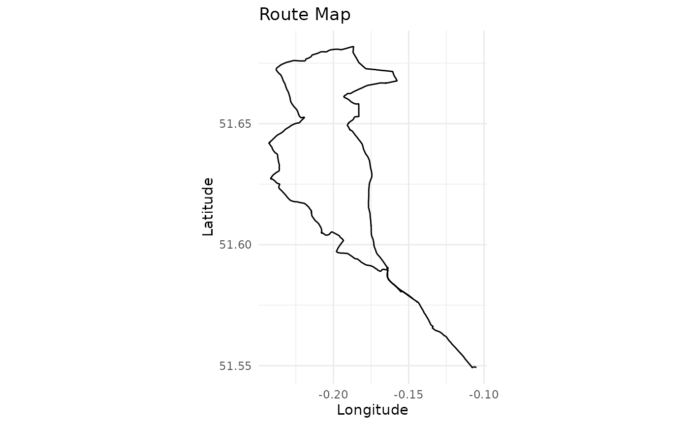

Introduction to gpxtoolbox
Martin Chan
2025-04-11
gpxtoolbox.RmdOverview
gpxtoolbox is an R package designed for processing,
analysing, and visualising GPS track data from GPX files. It provides
tools for calculating route metrics such as distance, elevation
gain/loss, and speed, as well as visualisation capabilities for
elevation profiles and route maps.
This vignette demonstrates how to use the key functions of the package.
Installation
You can install the development version of gpxtoolbox
from GitHub:
# Install devtools if not already installed
install.packages("devtools")
# Install gpxtoolbox
devtools::install_github("martinctc/gpxtoolbox")Example Workflow
The package includes an example GPX file,
icc_intro_ride.gpx, which is used in the following
examples.
Load the Package
library(gpxtoolbox)Read a GPX File
Use the read_gpx_track() function to extract track
points from a GPX file.
# Path to the example GPX file
example_gpx_path <- system.file("extdata", "icc_intro_ride.gpx", package = "gpxtoolbox")
# Read the GPX file
track_data <- read_gpx_track(example_gpx_path)
# View the first few rows of the track data
head(track_data)## # A tibble: 6 × 4
## lon lat ele time
## <dbl> <dbl> <dbl> <dttm>
## 1 -0.105 51.5 42.8 NA
## 2 -0.105 51.5 42.7 NA
## 3 -0.105 51.5 42.1 NA
## 4 -0.105 51.5 41.5 NA
## 5 -0.105 51.5 41.4 NA
## 6 -0.106 51.5 40.7 NACalculate Metrics
Use calculate_distance() and
calculate_elevation_stats() to compute distances and
elevation statistics.
# Calculate distances
track_data <- calculate_distance(track_data)
# Calculate elevation statistics
track_data <- calculate_elevation_stats(track_data)
# View the updated track data
head(track_data)## # A tibble: 6 × 10
## lon lat ele time distance cumulative_distance ele_gain
## <dbl> <dbl> <dbl> <dttm> <dbl> <dbl> <dbl>
## 1 -0.105 51.5 42.8 NA 0 0 0
## 2 -0.105 51.5 42.7 NA 2.36 0.00236 0
## 3 -0.105 51.5 42.1 NA 9.42 0.0118 0
## 4 -0.105 51.5 41.5 NA 11.2 0.0230 0
## 5 -0.105 51.5 41.4 NA 2.08 0.0250 0
## 6 -0.106 51.5 40.7 NA 12.3 0.0374 0
## # ℹ 3 more variables: ele_loss <dbl>, cumulative_ele_gain <dbl>,
## # cumulative_ele_loss <dbl>Generate Route Statistics
Use calculate_route_stats() to summarise route
statistics such as total distance, elevation gain, and average
speed.
# Calculate route statistics
stats <- calculate_route_stats(track_data)
# Print the statistics
print(stats)## $total_distance_km
## [1] 42.81
##
## $total_elevation_gain_m
## [1] 622.2
##
## $total_elevation_loss_m
## [1] 556.6
##
## $max_elevation_m
## [1] 143
##
## $min_elevation_m
## [1] 29.9Visualise the Route
Use plot_route() to create visualisations of the route,
including an elevation profile and a route map.
# Plot the route
plot_route(track_data)
Analyse a GPX File in One Step
The analyse_gpx() function provides a high-level
interface to process a GPX file and return statistics, plots, or
processed data.
# Analyse the example GPX file and get summary statistics
stats <- analyse_gpx(example_gpx_path, return = "stats")## Reading GPX file: /home/runner/work/_temp/Library/gpxtoolbox/extdata/icc_intro_ride.gpx
print(stats)## $total_distance_km
## [1] 42.81
##
## $total_elevation_gain_m
## [1] 622.2
##
## $total_elevation_loss_m
## [1] 556.6
##
## $max_elevation_m
## [1] 143
##
## $min_elevation_m
## [1] 29.9
##
## $start_point
## [1] "The Gatehouse, Fieldway Crescent, Canonbury, Highbury, London Borough of Islington, London, Greater London, England, N5 1PZ, United Kingdom"
##
## $end_point
## [1] "Archway Road, London Borough of Haringey, London, Greater London, England, N6 4EJ, United Kingdom"
##
## $p25_point
## [1] "Highwood Hill, Mill Hill, London Borough of Barnet, London, Greater London, England, NW7 4HN, United Kingdom"
##
## $p50_point
## [1] "36, Camlet Way, Hadley Wood, London Borough of Enfield, London, Greater London, England, EN4 0LJ, United Kingdom"
##
## $p75_point
## [1] "Lincoln Road, Colney Hatch, London Borough of Barnet, London, Greater London, England, N2 9DJ, United Kingdom"
# Generate a plot of the route
analyse_gpx(example_gpx_path, return = "plot")## Reading GPX file: /home/runner/work/_temp/Library/gpxtoolbox/extdata/icc_intro_ride.gpx
# Get processed track points data
track_data <- analyse_gpx(example_gpx_path, return = "data")## Reading GPX file: /home/runner/work/_temp/Library/gpxtoolbox/extdata/icc_intro_ride.gpxWorking with Web Links
You can also analyse GPX files from web links (e.g., Strava or RideWithGPS). The function will automatically download the GPX file and process it.
# Analyse a GPX file from a Strava link
# stats <- analyse_gpx("https://www.strava.com/routes/3193200014155699162")
# Analyse a GPX file from a RideWithGPS link
# stats <- analyse_gpx("https://ridewithgps.com/routes/39294504")